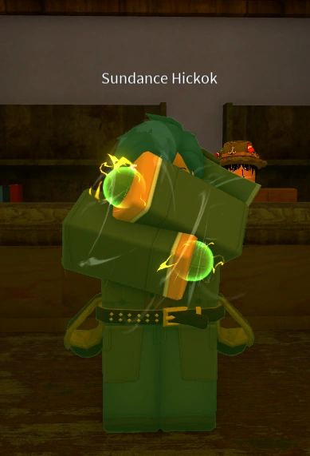
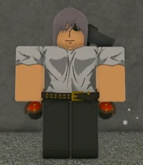
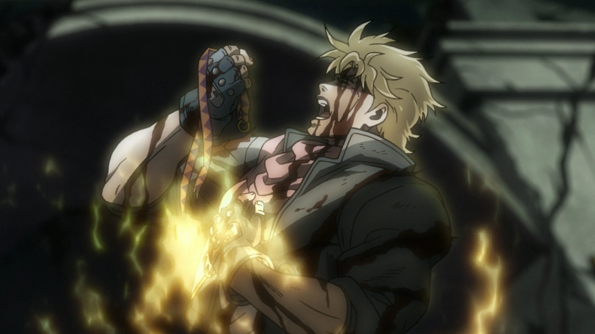
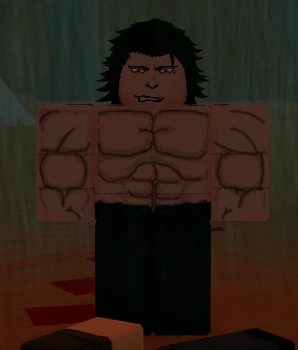

Nesta página, você encontrará informações sobre as Especialidades de Bridger: Western, incluindo suas características, habilidades e formas de utilização. Explore cada seção para aprender mais sobre as especialidades disponíveis e descobrir como utilizá-las no jogo. Lembre-se de que, por se tratar de uma wiki administrada pela comunidade, algumas informações podem estar incorretas ou desatualizadas.

O Spin é uma especialidade baseada na rotação de esferas de aço, permitindo realizar ataques com diferentes trajetórias e efeitos.
Pressione Z para carregar a energia do Spin. Use M1 e M2 para arremessar as esferas de aço e E ou R para alternar entre os estilos de arremesso. T permite lançar as duas esferas simultaneamente. Enquanto estiver carregado, C executa o Spin Punch. F ativa o Tonic Guard quando você estiver carregado e carregando uma garrafa de tônico.

As Wrecking Balls são uma variante do Spin que modifica as esferas de aço, adicionando propriedades próprias aos ataques.
Os controles seguem o sistema do Spin: pressione Z para carregar energia, utilize M1 e M2 para arremessar as esferas e E ou R para alternar os estilos de arremesso. A variante também possui uma versão especial chamada FAUX Wrecking Ball, cujos impactos liberam projéteis adicionais.

O Shabōn Hamon é uma especialidade que utiliza bolhas carregadas com Hamon para atacar, perseguir alvos e bloquear projéteis.
No PC, pressione Z para carregar energia. Use M1 para lançar bolhas e M2 para utilizar o Shabon Cutter. E dispara bolhas teleguiadas, R executa o Ripple Kick, T ativa o Shabon Lens e G cria uma barreira que intercepta projéteis. V lança uma bolha que pode ser detonada como uma flashbang.

O Vampiro é uma condição especial que concede habilidades sobrenaturais, permite recuperar vida utilizando sangue e oferece um sistema próprio de progressão. Em contrapartida, vampiros não podem utilizar armas de fogo e sofrem danos quando expostos à luz solar fora das sombras.
Utilize os ataques e as habilidades vampíricas para causar dano e encher a barra de sangue. O sangue acumulado pode ser usado para recuperar vida e regenerar membros perdidos. Evolua seu nível de vampiro completando as missões do sistema de progressão e procure permanecer nas sombras durante o dia para evitar os efeitos da luz solar.